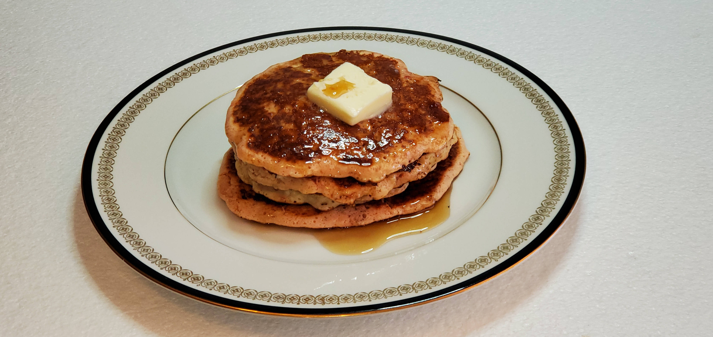

This is a recipe for "Martha White Muffins Pancakes"

Ingredients (Makes 6 pancakes)
- One 7 oz. package of Martha White Muffin Mix of your choosing ( Apple Cider, Apple Cinnamon, Banana Chocolate Chip, Banana Nut, Birthday Cake, Blueberry, Blueberry Cheesecake, Blueberry Whole Grain, Brownie Bites, Chocolate Chip, Chocolate Chocolate Chip, Cinnamon Sugar, Cranberry Orange, Gluten Free Blueberry, Honey Bran, Lemon Poppy Seed, Pumpkin Spice, Strawberry, Strawberry Cheesecake, Wild Berry)
- One large egg at room temperature
- 2/3 cup of milk or Silk Original Almond Milk at room temperature
- One tbsp. of melted butter
- A Copper Chef 10 Inch Round Fry Pan
Directions
- Whisk the large egg in a medium sized bowl.
- Stir in the muffin mix, milk, and melted butter until the large lumps disappear. (The batter should be slightly lumpy.)
- Let the batter rest for 5 to 10 minutes
- Heat the fry pan on the stove over medium-low heat (“4” on my stove’s 10-point control knob) until drops of cold-water dance. Then butter the fry pan.
- When the pan has warmed up, use a ladle to put 1/4 cup of batter in the center of the pan.
- Cook for 3 minutes until bubbles form and edges look dry.
- Flip carefully with the spatula and cook an additional 2 minutes until golden brown.
- Transfer the pancake to a plate, and top with a pad of butter and your favorite syrup.
- Enjoy.
Download Recipe